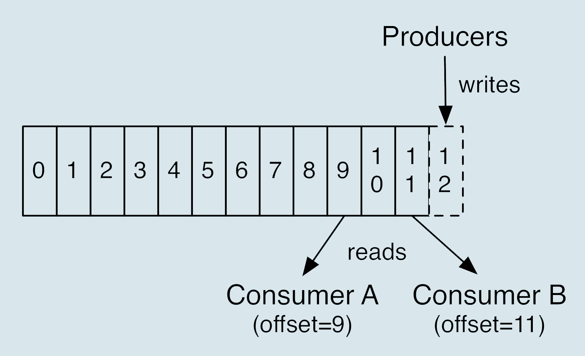

- 00 开篇词 为什么要学习Kafka？.md.html
- 01 消息引擎系统ABC.md.html
- 02 一篇文章带你快速搞定Kafka术语.md.html
- 03 Kafka只是消息引擎系统吗？.md.html
- 04 我应该选择哪种Kafka？.md.html
- 05 聊聊Kafka的版本号.md.html
- 06 Kafka线上集群部署方案怎么做？.md.html
- 07 最最最重要的集群参数配置（上）.md.html
- 08 最最最重要的集群参数配置（下）.md.html
- 09 生产者消息分区机制原理剖析.md.html
- 10 生产者压缩算法面面观.md.html
- 11 无消息丢失配置怎么实现？.md.html
- 12 客户端都有哪些不常见但是很高级的功能？.md.html
- 13 Java生产者是如何管理TCP连接的？.md.html
- 14 幂等生产者和事务生产者是一回事吗？.md.html
- 15 消费者组到底是什么？.md.html
- 16 揭开神秘的“位移主题”面纱.md.html
- 17 消费者组重平衡能避免吗？.md.html
- 18 Kafka中位移提交那些事儿.md.html
- 19 CommitFailedException异常怎么处理？.md.html
- 20 多线程开发消费者实例.md.html
- 21 Java 消费者是如何管理TCP连接的.md.html
- 22 消费者组消费进度监控都怎么实现？.md.html
- 23 Kafka副本机制详解.md.html
- 24 请求是怎么被处理的？.md.html
- 25 消费者组重平衡全流程解析.md.html
- 26 你一定不能错过的Kafka控制器.md.html
- 27 关于高水位和Leader Epoch的讨论.md.html
- 28 主题管理知多少.md.html
- 29 Kafka动态配置了解下？.md.html
- 30 怎么重设消费者组位移？.md.html
- 31 常见工具脚本大汇总.md.html
- 32 KafkaAdminClient：Kafka的运维利器.md.html
- 33 Kafka认证机制用哪家？.md.html
- 34 云环境下的授权该怎么做？.md.html
- 35 跨集群备份解决方案MirrorMaker.md.html
- 36 你应该怎么监控Kafka？.md.html
- 37 主流的Kafka监控框架.md.html
- 38 调优Kafka，你做到了吗？.md.html
- 39 从0搭建基于Kafka的企业级实时日志流处理平台.md.html
- 40 Kafka Streams与其他流处理平台的差异在哪里？.md.html
- 41 Kafka Streams DSL开发实例.md.html
- 42 Kafka Streams在金融领域的应用.md.html
- 加餐 搭建开发环境、阅读源码方法、经典学习资料大揭秘.md.html
- 结束语 以梦为马，莫负韶华！.md.html
11 无消息丢失配置怎么实现？
你好，我是胡夕。今天我要和你分享的主题是：如何配置 Kafka 无消息丢失。
一直以来，很多人对于 Kafka 丢失消息这件事情都有着自己的理解，因而也就有着自己的解决之道。在讨论具体的应对方法之前，我觉得我们首先要明确，在 Kafka 的世界里什么才算是消息丢失，或者说 Kafka 在什么情况下能保证消息不丢失。这点非常关键，因为很多时候我们容易混淆责任的边界，如果搞不清楚事情由谁负责，自然也就不知道由谁来出解决方案了。
那 Kafka 到底在什么情况下才能保证消息不丢失呢？
一句话概括，Kafka 只对“已提交”的消息（committed message）做有限度的持久化保证。
这句话里面有两个核心要素，我们一一来看。
第一个核心要素是“已提交的消息”。什么是已提交的消息？当 Kafka 的若干个 Broker 成功地接收到一条消息并写入到日志文件后，它们会告诉生产者程序这条消息已成功提交。此时，这条消息在 Kafka 看来就正式变为“已提交”消息了。
那为什么是若干个 Broker 呢？这取决于你对“已提交”的定义。你可以选择只要有一个 Broker 成功保存该消息就算是已提交，也可以是令所有 Broker 都成功保存该消息才算是已提交。不论哪种情况，Kafka 只对已提交的消息做持久化保证这件事情是不变的。
第二个核心要素就是“有限度的持久化保证”，也就是说 Kafka 不可能保证在任何情况下都做到不丢失消息。举个极端点的例子，如果地球都不存在了，Kafka 还能保存任何消息吗？显然不能！倘若这种情况下你依然还想要 Kafka 不丢消息，那么只能在别的星球部署 Kafka Broker 服务器了。
现在你应该能够稍微体会出这里的“有限度”的含义了吧，其实就是说 Kafka 不丢消息是有前提条件的。假如你的消息保存在 N 个 Kafka Broker 上，那么这个前提条件就是这 N 个 Broker 中至少有 1 个存活。只要这个条件成立，Kafka 就能保证你的这条消息永远不会丢失。
总结一下，Kafka 是能做到不丢失消息的，只不过这些消息必须是已提交的消息，而且还要满足一定的条件。当然，说明这件事并不是要为 Kafka 推卸责任，而是为了在出现该类问题时我们能够明确责任边界。
“消息丢失”案例
好了，理解了 Kafka 是怎样做到不丢失消息的，那接下来我带你复盘一下那些常见的“Kafka 消息丢失”案例。注意，这里可是带引号的消息丢失哦，其实有些时候我们只是冤枉了 Kafka 而已。
案例 1：生产者程序丢失数据
Producer 程序丢失消息，这应该算是被抱怨最多的数据丢失场景了。我来描述一个场景：你写了一个 Producer 应用向 Kafka 发送消息，最后发现 Kafka 没有保存，于是大骂：“Kafka 真烂，消息发送居然都能丢失，而且还不告诉我？！”如果你有过这样的经历，那么请先消消气，我们来分析下可能的原因。
目前 Kafka Producer 是异步发送消息的，也就是说如果你调用的是 producer.send(msg) 这个 API，那么它通常会立即返回，但此时你不能认为消息发送已成功完成。
这种发送方式有个有趣的名字，叫“fire and forget”，翻译一下就是“发射后不管”。这个术语原本属于导弹制导领域，后来被借鉴到计算机领域中，它的意思是，执行完一个操作后不去管它的结果是否成功。调用 producer.send(msg) 就属于典型的“fire and forget”，因此如果出现消息丢失，我们是无法知晓的。这个发送方式挺不靠谱吧，不过有些公司真的就是在使用这个 API 发送消息。
如果用这个方式，可能会有哪些因素导致消息没有发送成功呢？其实原因有很多，例如网络抖动，导致消息压根就没有发送到 Broker 端；或者消息本身不合格导致 Broker 拒绝接收（比如消息太大了，超过了 Broker 的承受能力）等。这么来看，让 Kafka“背锅”就有点冤枉它了。就像前面说过的，Kafka 不认为消息是已提交的，因此也就没有 Kafka 丢失消息这一说了。
不过，就算不是 Kafka 的“锅”，我们也要解决这个问题吧。实际上，解决此问题的方法非常简单：Producer 永远要使用带有回调通知的发送 API，也就是说不要使用 producer.send(msg)，而要使用 producer.send(msg, callback)。不要小瞧这里的 callback（回调），它能准确地告诉你消息是否真的提交成功了。一旦出现消息提交失败的情况，你就可以有针对性地进行处理。
举例来说，如果是因为那些瞬时错误，那么仅仅让 Producer 重试就可以了；如果是消息不合格造成的，那么可以调整消息格式后再次发送。总之，处理发送失败的责任在 Producer 端而非 Broker 端。
你可能会问，发送失败真的没可能是由 Broker 端的问题造成的吗？当然可能！如果你所有的 Broker 都宕机了，那么无论 Producer 端怎么重试都会失败的，此时你要做的是赶快处理 Broker 端的问题。但之前说的核心论据在这里依然是成立的：Kafka 依然不认为这条消息属于已提交消息，故对它不做任何持久化保证。
案例 2：消费者程序丢失数据
Consumer 端丢失数据主要体现在 Consumer 端要消费的消息不见了。Consumer 程序有个“位移”的概念，表示的是这个 Consumer 当前消费到的 Topic 分区的位置。下面这张图来自于官网，它清晰地展示了 Consumer 端的位移数据。

比如对于 Consumer A 而言，它当前的位移值就是 9；Consumer B 的位移值是 11。
这里的“位移”类似于我们看书时使用的书签，它会标记我们当前阅读了多少页，下次翻书的时候我们能直接跳到书签页继续阅读。
正确使用书签有两个步骤：第一步是读书，第二步是更新书签页。如果这两步的顺序颠倒了，就可能出现这样的场景：当前的书签页是第 90 页，我先将书签放到第 100 页上，之后开始读书。当阅读到第 95 页时，我临时有事中止了阅读。那么问题来了，当我下次直接跳到书签页阅读时，我就丢失了第 96～99 页的内容，即这些消息就丢失了。
同理，Kafka 中 Consumer 端的消息丢失就是这么一回事。要对抗这种消息丢失，办法很简单：维持先消费消息（阅读），再更新位移（书签）的顺序即可。这样就能最大限度地保证消息不丢失。
当然，这种处理方式可能带来的问题是消息的重复处理，类似于同一页书被读了很多遍，但这不属于消息丢失的情形。在专栏后面的内容中，我会跟你分享如何应对重复消费的问题。
除了上面所说的场景，其实还存在一种比较隐蔽的消息丢失场景。
我们依然以看书为例。假设你花钱从网上租借了一本共有 10 章内容的电子书，该电子书的有效阅读时间是 1 天，过期后该电子书就无法打开，但如果在 1 天之内你完成阅读就退还租金。
为了加快阅读速度，你把书中的 10 个章节分别委托给你的 10 个朋友，请他们帮你阅读，并拜托他们告诉你主旨大意。当电子书临近过期时，这 10 个人告诉你说他们读完了自己所负责的那个章节的内容，于是你放心地把该书还了回去。不料，在这 10 个人向你描述主旨大意时，你突然发现有一个人对你撒了谎，他并没有看完他负责的那个章节。那么很显然，你无法知道那一章的内容了。
对于 Kafka 而言，这就好比 Consumer 程序从 Kafka 获取到消息后开启了多个线程异步处理消息，而 Consumer 程序自动地向前更新位移。假如其中某个线程运行失败了，它负责的消息没有被成功处理，但位移已经被更新了，因此这条消息对于 Consumer 而言实际上是丢失了。
这里的关键在于 Consumer 自动提交位移，与你没有确认书籍内容被全部读完就将书归还类似，你没有真正地确认消息是否真的被消费就“盲目”地更新了位移。
这个问题的解决方案也很简单：如果是多线程异步处理消费消息，Consumer 程序不要开启自动提交位移，而是要应用程序手动提交位移。在这里我要提醒你一下，单个 Consumer 程序使用多线程来消费消息说起来容易，写成代码却异常困难，因为你很难正确地处理位移的更新，也就是说避免无消费消息丢失很简单，但极易出现消息被消费了多次的情况。
最佳实践
看完这两个案例之后，我来分享一下 Kafka 无消息丢失的配置，每一个其实都能对应上面提到的问题。
- 不要使用 producer.send(msg)，而要使用 producer.send(msg, callback)。记住，一定要使用带有回调通知的 send 方法。
- 设置 acks = all。acks 是 Producer 的一个参数，代表了你对“已提交”消息的定义。如果设置成 all，则表明所有副本 Broker 都要接收到消息，该消息才算是“已提交”。这是最高等级的“已提交”定义。
- 设置 retries 为一个较大的值。这里的 retries 同样是 Producer 的参数，对应前面提到的 Producer 自动重试。当出现网络的瞬时抖动时，消息发送可能会失败，此时配置了 retries > 0 的 Producer 能够自动重试消息发送，避免消息丢失。
- 设置 unclean.leader.election.enable = false。这是 Broker 端的参数，它控制的是哪些 Broker 有资格竞选分区的 Leader。如果一个 Broker 落后原先的 Leader 太多，那么它一旦成为新的 Leader，必然会造成消息的丢失。故一般都要将该参数设置成 false，即不允许这种情况的发生。
- 设置 replication.factor >= 3。这也是 Broker 端的参数。其实这里想表述的是，最好将消息多保存几份，毕竟目前防止消息丢失的主要机制就是冗余。
- 设置 min.insync.replicas > 1。这依然是 Broker 端参数，控制的是消息至少要被写入到多少个副本才算是“已提交”。设置成大于 1 可以提升消息持久性。在实际环境中千万不要使用默认值 1。
- 确保 replication.factor > min.insync.replicas。如果两者相等，那么只要有一个副本挂机，整个分区就无法正常工作了。我们不仅要改善消息的持久性，防止数据丢失，还要在不降低可用性的基础上完成。推荐设置成 replication.factor = min.insync.replicas + 1。
- 确保消息消费完成再提交。Consumer 端有个参数 enable.auto.commit，最好把它设置成 false，并采用手动提交位移的方式。就像前面说的，这对于单 Consumer 多线程处理的场景而言是至关重要的。
小结
今天，我们讨论了 Kafka 无消息丢失的方方面面。我们先从什么是消息丢失开始说起，明确了 Kafka 持久化保证的责任边界，随后以这个规则为标尺衡量了一些常见的数据丢失场景，最后通过分析这些场景，我给出了 Kafka 无消息丢失的“最佳实践”。总结起来，我希望你今天能有两个收获：
- 明确 Kafka 持久化保证的含义和限定条件。
- 熟练配置 Kafka 无消息丢失参数。